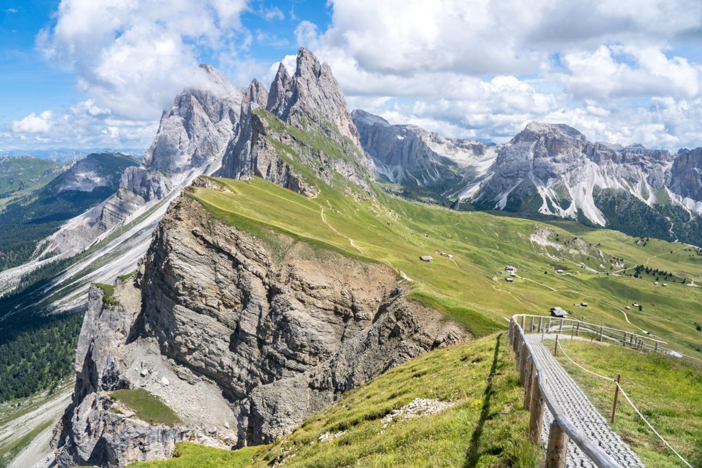
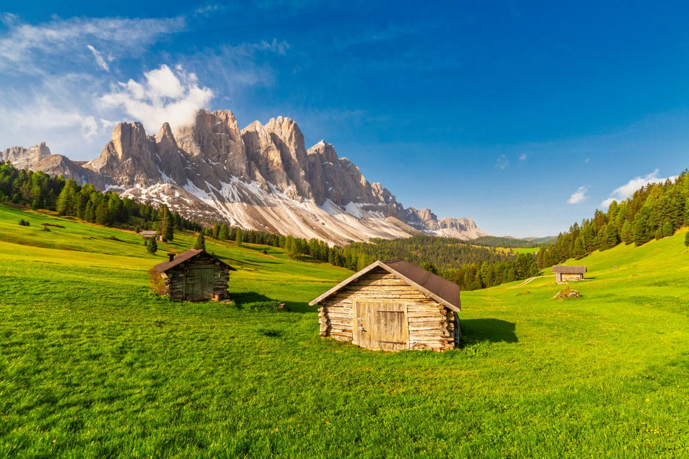

Discover breathtaking mountain landscapes, unforgettable adventures, and extraordinary destinations around the world.


Imagine walking through green alpine meadows while enormous limestone peaks rise dramatically into the sky. The Dolomites are famous for their jagged rock formations, spectacular mountain views, and charming alpine villages.
Discover the iconic Seceda ridgeline, explore scenic hiking trails, visit traditional mountain huts, and enjoy delicious Italian food surrounded by extraordinary scenery.
Highlights: Dramatic peaks, alpine meadows, panoramic viewpoints, mountain huts, and authentic local cuisine.
Best for: Scenic hiking, photography, nature lovers, and cultural experiences.
Imagine standing beneath towering snow-covered peaks while crystal-clear lakes sparkle in the sunlight. The Swiss Alps are famous for their breathtaking landscapes, picturesque mountain villages, and spectacular views of the Matterhorn.
Explore beautiful hiking trails around Zermatt, ride scenic mountain railways, discover traditional Swiss villages, and enjoy unforgettable views of glaciers and alpine valleys.
Highlights: The Matterhorn, crystal-clear lakes, panoramic mountain views, scenic railways, and charming alpine villages.
Best for: First-time mountain travellers, scenic walks, photography, and unforgettable alpine experiences.
Imagine exploring vast wilderness areas surrounded by towering mountains, turquoise lakes, and ancient glaciers. The Canadian Rockies are famous for their dramatic scenery, peaceful forests, and incredible opportunities to experience nature.
Discover the beautiful Lake Louise, explore Banff and Jasper National Parks, drive along the spectacular Icefields Parkway, and look out for wildlife in one of Canada's most beautiful mountain regions.
Highlights: Turquoise lakes, ancient glaciers, spectacular mountain roads, waterfalls, forests, and wildlife.
Best for: Nature lovers, hiking, wildlife watching, photography, and wilderness adventures.
Imagine hiking through a remote wilderness where enormous granite towers rise above turquoise lakes and glaciers. Patagonia is famous for its rugged landscapes, powerful winds, and some of the most spectacular mountain scenery on Earth.
Explore Torres del Paine National Park in Chile, discover the impressive Mount Fitz Roy near El Chaltén in Argentina, and follow breathtaking trails through valleys, forests, and dramatic glacial landscapes.
Highlights: Towering granite peaks, massive glaciers, turquoise lakes, remote wilderness, and spectacular trekking routes.
Best for: Adventurous hikers, experienced trekkers, outdoor enthusiasts, and travellers seeking extraordinary natural landscapes.
Imagine walking through traditional mountain villages with breathtaking views of some of the highest peaks in the world. The Himalayas are famous for their enormous mountains, ancient cultural traditions, and unforgettable trekking routes.
Explore trails in the Annapurna region, pass through traditional Nepalese villages, experience the warm hospitality of local communities, and admire spectacular views of snow-covered Himalayan peaks.
Highlights: Himalayan mountain views, traditional villages, Buddhist monasteries, high-altitude landscapes, and unforgettable trekking experiences.
Best for: Trekking enthusiasts, adventurous travellers, cultural experiences, and people looking for a challenging mountain adventure.